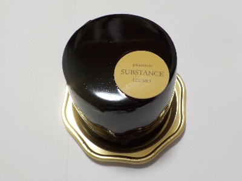
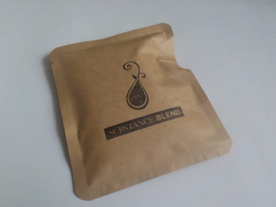
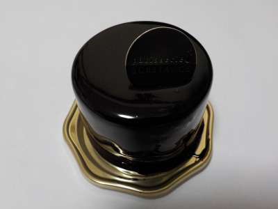
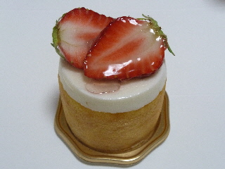
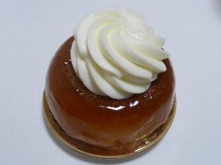
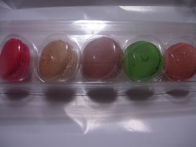
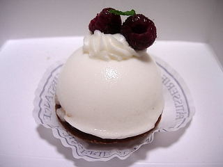

シュブスタンスのアンフィデル。
2024/09/06

カカオの値上げのニュースを聞いていたら、チョコケーキが食べたくなりました。
中はクリームなのでチョコケーキではないですが、チョコが濃厚でとっても美味しい。
十分にチョコ味が楽しめて満足しました。
島根県出雲市今市町北本町3-3-6
2024/09/06

カカオの値上げのニュースを聞いていたら、チョコケーキが食べたくなりました。
中はクリームなのでチョコケーキではないですが、チョコが濃厚でとっても美味しい。
十分にチョコ味が楽しめて満足しました。
2021/06/27

ケーキ屋さんのシュブスタンスで販売していたドリップコーヒーです。
武志町のストリングス コーヒー ロースターズってお店のものみたいです。
自宅でお湯を注ぐだけで、こんな美味しいコーヒーが飲めるんだ！ってちょっと感動しました。
贅沢したいときはケーキと一緒に買おうと思いました。
2021/03/25

チョコレートの艶が凄いです。とっても美しく高級感がありました。
アンフィデルって名前のケーキです。
ツヤツヤのチョコでコーティングされているので見た目硬そうな感じがしますが、とっても柔らかいです。
チョコが垂れ落ちないのが不思議だなーって思いました。
外はチョコ、中は沢山のバニラクリーム、下がチョコケーキでした。味わい深くてとっても美味しいケーキでした。
ここのケーキは500円以上しても買う価値があるって思いました。
2018/12/22
姫原町から今市町に引っ越しです。
グーグルで検索するとシュブスタンスとシュブシュタンスが出てきます。
フェイスブックの住所で検索するとシュブスタンスの場所ですが、実際の場所はシュブシュタンスの場所だと思う。
なんでこんな表示になっているのか不思議です。
行くときは注意しましょう。
今はクリスマスシーズンなので、混んでそうなので行きません。25日過ぎたら行こうかな。
2014/06/09
見た目が綺麗ですね。
整った感じが好きです。

チーズクリームも中に入っている苺ジャムも、しっかりとした味があって美味しかったです。
素材の味をしっかり味わえました。
432円と少し高い値段ですが、美味しかったのでそれくらいしてもいいかなって思いました。
2014/06/09
クリームたっぷりで美味しそうなバサランです。

食べてみたらちょっとビックリ。
洋酒がたっぷり入っていました。
しっとりを超えています。ケーキの中に液体がありました。
ケーキが洋酒にしっかり浸かっているのでとっても濃い味でした。
とっても美味しいですが、重い感じもしました。
体調のいいときにまた食べたいです。
389円でした。
2008/12/23
クリスマスって事で、パラオでシュブスタンの商品が期間限定で販売してました。
マカロン5個セットで1100円です。ちょっとお高い気がするんですが、クリスマスって事で気前良く買ってみました。きっと値段分の価値があるんだろうと期待しながら食べました。

マカロン自体が濃い味仕様でした。マカロンに味がたっぷりしみこませてありますね。なので食感がちょっとねっちょりとしてました。
それにクリームだったり、ジャムが挟んであるので、甘さが強いですね。
味がしっかり入っているので高いのかな？なんて思いました。
2008/10/3
新しく出来たケーキ屋さんです。フランス菓子店らしいです。名前が難しくてなかなか覚えれません。

見た目レアチーズっぽく、ふんわりとしていて可愛く見えますが、食感は少しハードでした。味もギュっと詰まった感じで、スティックタイプ系の味に近いかな？って思いました。
また今度違うケーキを食べてみようと思います。